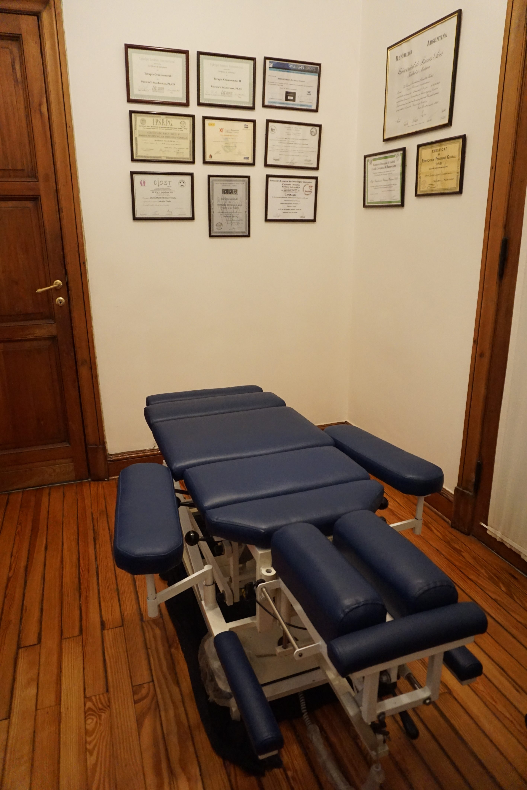
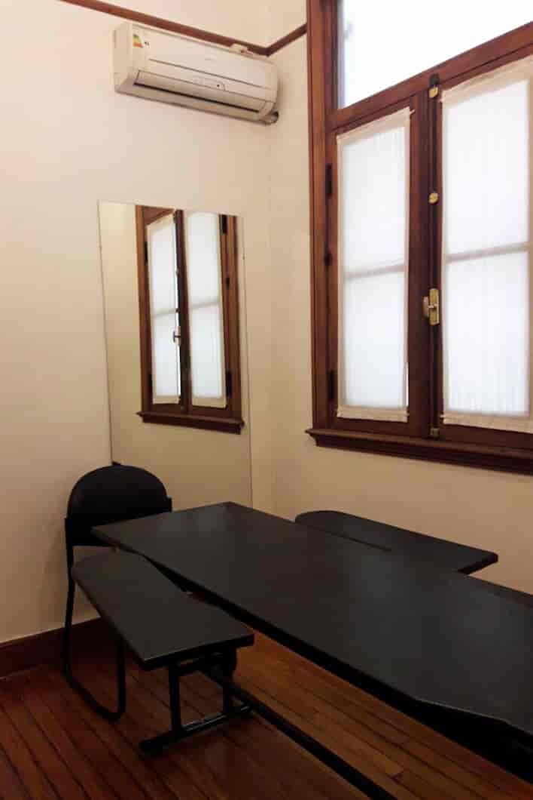
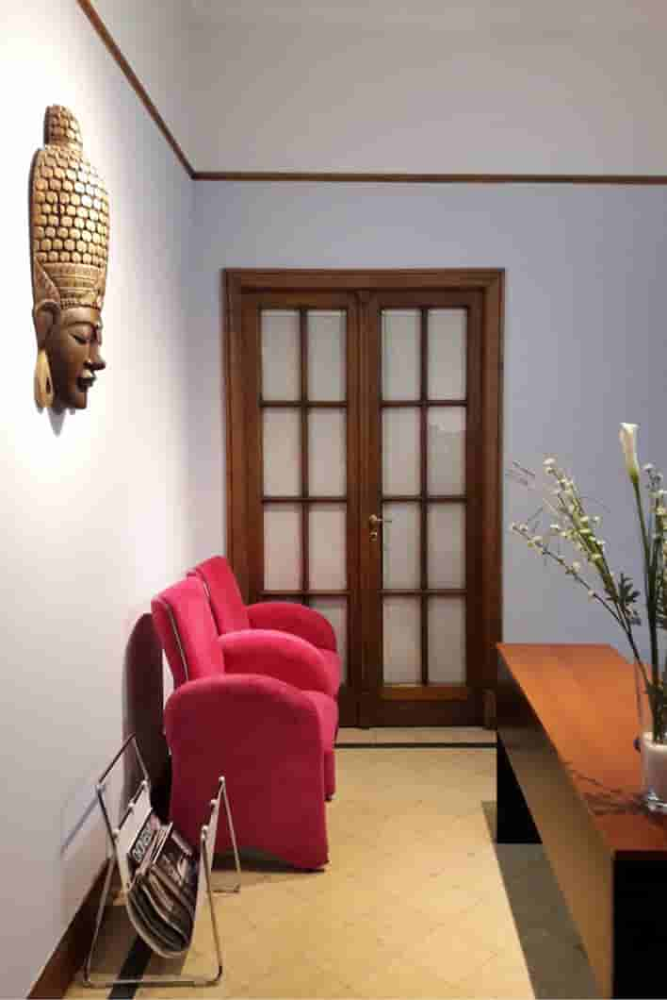

Centro de Osteopatía y Kinesiología Ayacucho
Trabajamos individualmente con cada paciente
ContáctenosBienvenidos a COKA
Clínica con los mejores Osteópatas y Kinesiólogos colegiados, con título universitario. Nos encontramos en continua formación y aprendiendo las nuevas tendencias basadas en la evidencia científica. Ofrecemos tratamientos y servicios altamente especializados a cada uno de nuestros pasientes.



Conócenos
Centro de atención
Nos encontramos en 9 de Julio 567, Ayacucho, Buenos Aires.